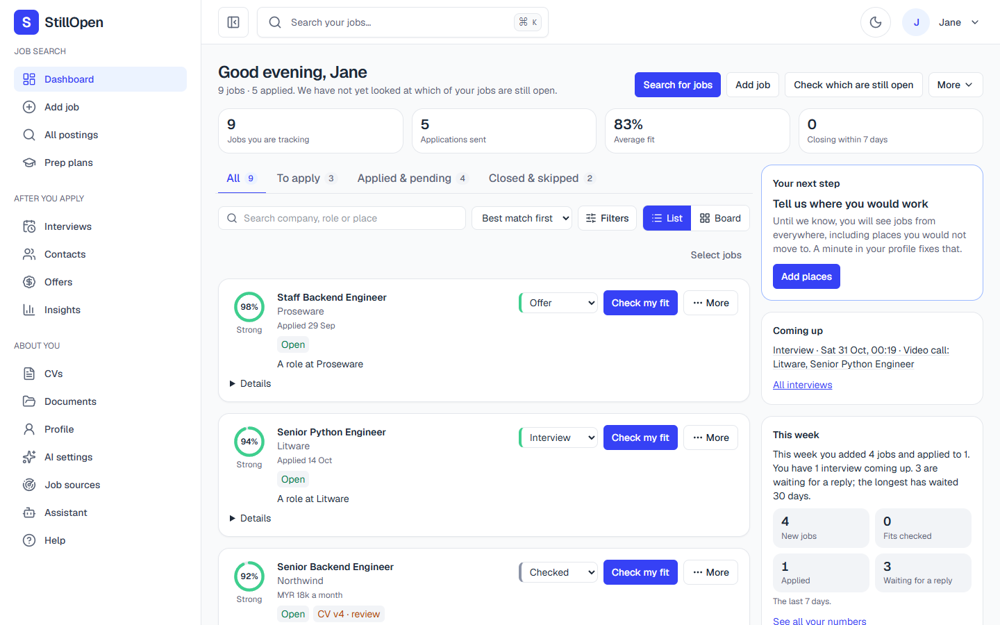

Never apply to a dead job again.
StillOpen searches 100+ job sources for you, checks which postings are still open, flags reposts and ghost jobs, tailors your CV with a fact check, and tracks every application. Free, open source, self-hosted.

How it works
Four steps, and you press every button that matters.
Say what you want
Your roles, places and CV. Nothing else is required.
It searches and checks
Company boards and remote-job feeds are read in the background; each posting is checked for closing, and re-listed ones are flagged.
Tailor with a fact check
A CV and cover letter per job. Anything not in your own material is flagged and locks the download until you approve it.
Apply yourself, then track
You send the application. StillOpen keeps the stages, follow-ups, interviews and offers.
Honest by design
A fact check on every tailored CV
Claims that are not in your CV or documents are listed. A flagged CV cannot be downloaded until you say the items are true. An AI assistant can never approve it for you.
It never sends without you
It never submits an application. The one thing it can send is an email from your own connected Google account, after you preview the exact message and press Send.
Your data is yours
One database on your machine or server, one person per account, export or delete everything any time.
Observations, not verdicts
"Possible repost" means the same role appeared under new links on different days. "Unclear" is shown when a page cannot be read.
What is in it
100+ sources, no key
Greenhouse, Lever, Ashby, SmartRecruiters and Recruitee boards plus remote-job feeds, with regional ones for Malaysia, the Gulf and Bangladesh.
Open or closed
Checks that a posting still takes applications and shows the result next to the job.
Fit and CV tailoring
A free keyword match works without any AI. Bring your own key or a local model for deeper reads.
Board, list and numbers
Every job by stage, plus plain weekly counts from your own search.
After you apply
Interviews, contacts, referrals, offers (compared per currency) and a private calendar link.
Works with Claude Code
An MCP server lets an assistant read and organise your search. It cannot send or delete.
Privacy: what goes where
| What | Where it goes |
|---|---|
| Your CV, notes and applications | Your own database. Nowhere else. |
| Job searches | The public job boards and feeds being read, asked for jobs matching your roles. |
| AI requests (only if you set one up) | The AI service you chose, with your own key; or a model on your own machine. Only the relevant passages are sent. |
| This website and the app's pages | No ads, no tracking, no cookies from this site, no third-party scripts, fonts or images. |
Install
About five minutes. Full guides: install and self-hosting.
git clone https://github.com/Druvo/stillopen.git && cd stillopen
docker compose -f docker-compose.selfhost.yml up -d --build
docker compose -f docker-compose.selfhost.yml exec stillopen python manage.py createsuperuserThen open http://localhost:8000.
git clone https://github.com/Druvo/stillopen.git && cd stillopen
python -m venv .venv && . .venv/bin/activate && pip install -r requirements.txt
(cd frontend && pnpm install && pnpm build)
python manage.py migrate && python manage.py createsuperuser && python manage.py runserverNeeds Python 3.12 or later, and Node 22 or later with pnpm for the app. On Windows activate with .venv\Scripts\activate.
Known limits
- The deepest reads (written evaluations, AI-tailored CVs) need your own AI key or a local model; the free keyword match needs none.
- The interface is English only, and there is no mobile app (the web app works on a phone).
- Job sources can change their APIs and stop working until fixed. LinkedIn, Indeed and Glassdoor are never scraped.
- Gmail and Calendar features need your own Google Cloud project.